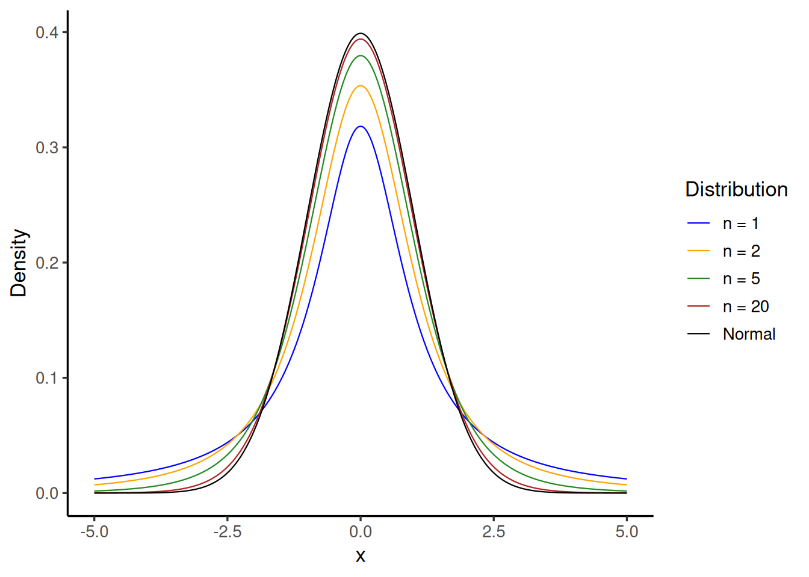

Two sample tests: The t-test
Introduction
In this lecture, we will look at parametric tests for comparing samples of distributions, when the samples are independent, and our tests are based on the normal distribution. Recall the first test we looked at - the Z-test - when we wanted to test if the mean of the population was a particular value. Our hypotheses are:
\[ H_0: \mu = \mu_0 \text{ vs } H_1: \mu \neq \mu_0 \quad (\text{ or we might have }\mu < \mu_0,\text{ or } \mu > \mu_0). \]
For large samples, we used the \(Z\)-test is fine and works well. Say we have \(X_1, X_2, \ldots, X_n \overset{\text{IID}}{\sim} N(\mu_0, \sigma^2)\). For large \(n\),
\[\frac{\bar{X} - \mu_0}{\sigma/\sqrt{n}} \approx N(0, 1) \quad \text{under } H_0\]
We can then use the Normal distribution to approximate the null distribution of \(\bar{X}\) under \(H_0\) and compute a \(p\)-value. Further, we can write down a \((1-\alpha)100\%\) confidence interval for \(\mu\).
In practice, we rarely know \(\sigma\) and estimate it from our sample. So our statistic is
\[T = \frac{\bar{X} - \mu_0}{S/\sqrt{n}}, \qquad \text{where } S^2 = \frac{1}{n-1}\sum_{i=1}^{n}(X_i - \bar{X})^2\]
This is usually a good estimate if \(n\) is large. The problem is when \(n\) is small — then \(S^2\)’s estimate of \(\sigma^2\) can be noisy - now we have randomness in both the numerator and the denominator, and the normal distribution may not work as well. We will introduce a new distribution for these situations.
The \(t\)-Distribution
Recall the following facts:
- If \(Z \sim N(0,1)\), then \(Z^2 \sim \chi^2_1\).
- If \(U_1, U_2, \ldots, U_n \overset{\text{IID}}{\sim} \chi^2_1\), then \(\displaystyle\sum_{i=1}^{n} U_i \sim \chi^2_n\).
- If \(U\) and \(V\) are independent, with \(U \sim \chi^2_n\), \(V \sim \chi^2_m\), then \(U + V \sim \chi^2_{m+n}\).
Definition 1 (The \(t\)-Distribution) If \(Z \sim N(0,1)\), \(U \sim \chi^2_k\), and \(Z\) is independent of \(U\), then \[T_n = \frac{Z}{\sqrt{U/n}}\] is said to have the \(t\)-distribution with \(n\) degrees of freedom.
Properties of the \(t\)-distribution
- \(T_n\) is symmetric about \(0\) (because \(Z\) is).
- \(E(T_n) = 0\).
- \(\operatorname{Var}(T_n) = \dfrac{n}{n-2}\) for \(n > 2\) (undefined for \(n \leq 2\)).
Since \(U \sim \chi^2_n\), we have \(E(U) = n\) and \(\operatorname{Var}(U) = 2n\).
For large \(n\), \(T_n\) approaches \(Z\), but for small \(n\), \(T_n\) has fatter tails (\(\operatorname{Var}(T_n) > \operatorname{Var}(Z)\)).
Note that \(E(U/n) = 1\) and \(U/n = \frac{1}{n}\sum Z_i^2 \xrightarrow{} 1\) where \(Z_i \sim \mathcal{N}(0,1)\) for all \(i\).
The figure below shows the \(t\)-densities for some small values of \(n\), and also \(n = 20\). Notice that already, for \(n=20\), the \(t\)-density is barely distinguishable from the black standard normal curve. This tells us that if \(n\) is at least 25, we may as well use the standard normal distribution.
Independence of \(\bar{X}\) and \(S^2\): Key Theorems
Theorem 1 If \(X_1, \ldots, X_n \overset{\text{IID}}{\sim} N(\mu, \sigma^2)\), then \(\bar{X} = \frac{1}{n}\sum_{i=1}^n X_i\) and \(X_i - \bar{X}\) are independent for all \(i, 1\le i \le n\).
Note that Theorem 1 is only true if the \(X_i\) are IID normal, and can be proved using moment generating functions. See Theorem A on page 196 in Rice (2006).
Corollary 1 \(\bar{X}\) and \(S^2 = \dfrac{1}{n-1}\displaystyle\sum_{i=1}^{n}(X_i - \bar{X})^2\) are independent.
Proof. \(S^2\) is a function of the \(X_i - \bar{X}\). By Theorem 1, these are all independent of \(\bar{X}\), so \(S^2\) is also independent of \(\bar{X}\).
Now let’s consider the distribution of \(S^2\):
Theorem 2 If \(X_1, \ldots, X_n \overset{\text{IID}}{\sim} N(\mu, \sigma^2)\) and \(S^2 = \dfrac{1}{n-1}\displaystyle\sum_{i=1}^{n}(X_i - \bar{X})^2\), then \[\frac{(n-1)S^2}{\sigma^2} \sim \chi^2_{n-1}\]
Proof. We prove the theorem for the case \(\sigma^2 = 1\) and \(\mu = 0\). If \(\sigma^2 \ne 1\), we simply consider \(S^2/\sigma^2\).
First note that: \[ \sum_{i=1}^n (X_i - \bar{X})^2 = \sum_{i=1}^n X_i^2 - 2\bar{X}\sum_{i=1}^n X_i + n\bar{X}^2 = \sum_{i=1}^n X_i^2 - n\bar{X}^2 \]
This implies that \((n-1)S^2 = \displaystyle\sum_{i=1}^{n}(X_i - \bar{X})^2 = \displaystyle\sum_{i=1}^n X_i^2 - n\bar{X}^2\).
Since \(X_i \sim N(0,1)\), we have \(X_i^2 \sim \chi^2_1\), hence \(\displaystyle\sum_{i=1}^n X_i^2 \sim \chi^2_n\).
Further, we know that \(\bar{X}/(1/\sqrt{n}) \sim N(0,1)\), we have \(\sqrt{n}\,\bar{X} \sim N(0,1)\), hence \(n\bar{X}^2 \sim \chi^2_1\).
Therefore \((n-1)S^2 \sim \chi^2_{n-1}\) . \(\blacksquare\)
Note that:
- \(\displaystyle\sum X_i^2\) and \(\bar{X}^2\) are dependent
- The decomposition \(\displaystyle\sum X_i^2 = (n-1)S^2 + n\bar{X}^2\) implies that \(n\) df \(= (n-1)\) df \(+ 1\) df).
Finally, we can discuss the distribution of the sample mean in the special case that our sample is from a normal distribution and \(n\) is small. It will still be true when \(n\) is large, but is not very useful.
The scaled sample mean has the \(t\)-distribution
Theorem 3 If \(X_1, \ldots, X_n \overset{\text{IID}}{\sim} N(\mu, \sigma^2)\), then \[T = \frac{\bar{X} - \mu}{S/\sqrt{n}} \sim t_{n-1}\]
Proof. Write
\[ \dfrac{\bar{X}-\mu}{S/\sqrt{n}} = \dfrac{\left(\dfrac{\bar{X}-\mu}{\sigma}\right)}{\dfrac{S}{\sqrt{n}\sigma}} = \dfrac{\left(\dfrac{\bar{X}-\mu}{\sigma/\sqrt{n}}\right)}{\sqrt{S^2/\sigma^2}} \]
Now \(Z := \dfrac{\bar{X}-\mu}{\sigma/\sqrt{n}} \sim N(0,1)\), and by Theorem 2, \(U := \dfrac{(n-1)S^2}{\sigma^2} \sim \chi^2_{n-1}\). Therefore
\[ \sqrt{\frac{S^2}{\sigma^2}} = \sqrt{\frac{(n-1)S^2/\sigma^2}{n-1}} = \sqrt{\frac{U}{n-1}} \]
By the definition of the \(t\)-distribution (Definition 1), \[ \frac{Z}{\sqrt{U/(n-1)}} \sim t_{n-1} \qquad \blacksquare \]
Confidence intervals using the \(t\)-distribution
Even if we cannot use the central limit theorem (because the sample size is too small), as long as we begin with a normal sample \(X_i \overset{\text{IID}}{\sim} N(\mu, \sigma^2)\) we can use the \(t\)-distribution to construct confidence intervals.
Let \(t_{\alpha/2,\,n-1}\) denote the value with area \(\alpha/2\) to its right (i.e. \(t_{\alpha/2,n-1} = -t_{1-\alpha/2,\,n-1}\) by the symmetry of the distribution about \(0\)). Then
\[ P\!\left(-t_{\alpha/2,\,n-1} \le \frac{\bar{X}-\mu}{S/\sqrt{n}} \le t_{\alpha/2,\,n-1}\right) = 1-\alpha \]
\[\Rightarrow\quad P\!\left(-\frac{S}{\sqrt{n}}\,t_{\alpha/2,\,n-1} \le \bar{X}-\mu \le \frac{S}{\sqrt{n}}\,t_{\alpha/2,\,n-1}\right)\]
\[\Rightarrow\quad P\!\left(\bar{X} - \frac{S}{\sqrt{n}}\,t_{\alpha/2,\,n-1} \;\le\; \mu \;\le\; \bar{X} + \frac{S}{\sqrt{n}}\,t_{\alpha/2,\,n-1}\right) = 1-\alpha\]
Note: If \(\sigma\) is known, or if \(n\) is large, use the \(Z\)-distribution instead.
Rejection regions for \(H_0: \mu = \mu_0\):
| Alternative \(H_1\) | Rejection Region |
|---|---|
| \(\mu > \mu_0\) | \(\{T \ge t_{\alpha,\,n-1}\}\) |
| \(\mu < \mu_0\) | \(\{T \le -t_{\alpha,\,n-1}\}\) |
| \(\mu \neq \mu_0\) | \(\{\lvert T \rvert \ge t_{\alpha/2,\,n-1}\}\) |
Two-Sample \(t\)-tests
So far, we have considered one-sample tests, and asked questions about whether a population parameter (for example, the mean or a proportion) is equal to a particular value. In practice, it is more common to ask whether the mean/proportion for two different populations are equal to each other. We can do a similar test with the difference of means: for examples we can consider one of the samples as results from a treatment group, and the other from the corresponding control group.
Equal, known variance
We might consider two independent samples \(X_1, \ldots, X_n \overset{\text{IID}}{\sim} N(\mu_X, \sigma^2)\) and \(Y_1, \ldots, Y_m \overset{\text{IID}}{\sim} N(\mu_Y, \sigma^2)\), and we want to test equality of their means.
We estimate \(\mu_X - \mu_Y\) by \(\bar{X} - \bar{Y}\), and test the hypotheses
\[ H_0: \mu_X - \mu_Y = 0 \text{ against } H_1: \mu_X - \mu_Y \neq 0 \quad (\text{or }\mu_X - \mu_Y > 0,\text{ or } \mu_X - \mu_Y < 0). \]
Since \(\bar{X}\) and \(\bar{Y}\) are normally distributed with the same known variance, we have that \[ \bar{X} - \bar{Y} \sim N\!\left(\mu_X - \mu_Y,\; \sigma^2\!\left(\tfrac{1}{n}+\tfrac{1}{m}\right)\right) \]
since \(E(\bar{X}-\bar{Y}) = \mu_X - \mu_Y\) and \(\operatorname{Var}(\bar{X}-\bar{Y}) = \operatorname{Var}(\bar{X}) + \operatorname{Var}(\bar{Y}) = \sigma^2/n + \sigma^2/m\).
Therefore,
\[Z = \frac{(\bar{X}-\bar{Y}) - (\mu_X - \mu_Y)}{\sqrt{\sigma^2\!\left(\frac{1}{n}+\frac{1}{m}\right)}} \sim N(0,1)\]
and we could use this for \(p\)-values and confidence intervals just as we did in the one sample case.
Equal, unknown variance
When \(\sigma^2\) is not known we estimate it from both samples, that is, we pool the samples to compute the variance as a weighted sum of the sample variances, divided by the sum of the degrees of freedom: \[ S_X^2 = \frac{1}{n-1}\sum_{i=1}^{n}(X_i-\bar{X})^2 \;\Rightarrow\; (n-1)S_X^2 = \sum_{i=1}^{n}(X_i-\bar{X})^2 \]
\[ (m-1)S_Y^2 = \sum_{j=1}^{m}(Y_j-\bar{Y})^2 \]
The pooled variance estimator is defined to be:
\[ S_p^2 = \frac{(n-1)S_X^2 + (m-1)S_Y^2}{(n-1)+(m-1)} = \frac{(n-1)S_X^2 + (m-1)S_Y^2}{m+n-2} \] This gives us the sample statistic for the two-sample test, and its distribution is clear from the theorems we stated above:
Theorem 4 If we have two independent samples \(X_1, \ldots, X_n \overset{\text{IID}}{\sim} N(\mu_X, \sigma_X^2)\), \(Y_1, \ldots, Y_m \overset{\text{IID}}{\sim} N(\mu_Y, \sigma_Y^2)\), and we believe that \(\sigma_X^2 = \sigma_Y^2\), but we don’t know this common value, then \[ T = \frac{(\bar{X}-\bar{Y}) - (\mu_X - \mu_Y)}{S_p\sqrt{\tfrac{1}{n}+\tfrac{1}{m}}} \sim t_{m+n-2} \]
Define \(S_{\bar{X}-\bar{Y}} = S_p\sqrt{\dfrac{1}{n}+\dfrac{1}{m}}\). Then \(T \sim t_{m+n-2}\) gives \(p\)-values and the confidence interval
\[(\bar{X}-\bar{Y}) \pm t_{\alpha/2,\; m+n-2} \cdot S_{\bar{X}-\bar{Y}}\]
Reject for large values of \(|T|\), as before.
Note: If both samples are large we don’t need \(X_i\) and \(Y_j\) to be normal, since by the CLT \(\bar{X}, \bar{Y}\) are approximately normal and we can use the normal distribution for the hypotheses tests and confidence intervals, or we could use the \(t\) distribution. Since they will practically coincide, we could use either. For small samples we cannot use the central limit theorem; but note that in order to use the \(t\)-distribution we must have \(X_i\), \(Y_j\) normal.
Example
A drug company has developed a new drug to reduce hypertension. A sample of 15 patients are chosen to test the drug. Their systolic BP is reduced by 28.3 mmHg with a sample SD of 12 mmHg. The control group of 20 patients takes the standard drug and the average BP is reduced by 17.1 mmHg with the sample SD of 11.84 mmHg. We can assume normality. Assuming equal variances, find a 95% CI for the difference in mean reduction of systolic BP, and conduct a two sided hypothesis test for the treatment making no difference.
Check your answer!
\(X\), \(Y\) normal. Treatment group \(n = 15\), control group \(m = 20\).
- Average systolic BP for the treatment group reduced by \(\bar{x} = 28.3\) mmHg, \(S_x = 12\) mmHg.
- Average systolic BP for the control group reduced by \(\bar{y} = 17.1\) mmHg, \(S_y = 11.84\) mmHg.
\[S_p^2 = \frac{(n-1)S_x^2 + (m-1)S_y^2}{m+n-2} = \frac{(14)(12^2) + (19)(11.84)^2}{15+20-2} \approx 141.80 \;\Rightarrow\; S_p \approx 11.91\]
\[H_0: \mu_X - \mu_Y = 0, \qquad H_1: \mu_X - \mu_Y \neq 0\]
\[t_{\text{obs}} = \frac{(28.3 - 17.1) - 0}{S_p\sqrt{\tfrac{1}{m}+\tfrac{1}{n}}} = \frac{11.2}{11.91\sqrt{\tfrac{1}{20}+\tfrac{1}{15}}} \approx 2.7532\]
\[p\text{-value} = P\!\left(|T| \ge 2.7532\right) = 2 \times P(T \ge 2.7532) \approx 0.00475 \approx 0.0047\] Reject the null hypothesis and conclude that there is indeed a difference in the patients who take don’t take the drug.References
Pimentel, Sam. 2024. STAT 135 Lecture Slides. Lecture slides (shared privately).
Rice, John A. 2006. Mathematical Statistics and Data Analysis. 3rd ed. Duxbury Press.